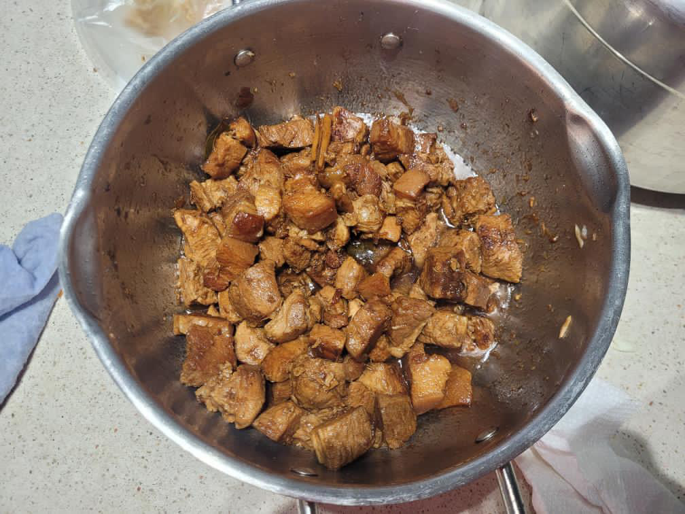

Bulalo is an essential part of Filipino cuisine that epitomizes comfort food at its finest. This hearty soup is beloved for its rich, flavorful broth and tender beef shanks, making it a favorite among locals and visitors alike.
At its core, Bulalo is a beef soup made primarily from tender beef shanks (or baka) simmered slowly to extract their rich flavors and velvety texture. The dish is characterized by its robust broth, which is typically clear and aromatic, infused with the essence of beef, onions, garlic, and spices.
Beef Shanks: This is the star ingredient of Bulalo. Beef shanks are used for their rich flavor and the gelatinous texture they impart to the broth when cooked slowly. The marrow inside the bones adds depth and richness to the soup.
Water: Water is the base of the broth. It's used to simmer the beef shanks along with the other ingredients to create a flavorful soup.
Onions: Onions are commonly used to add sweetness and depth of flavor to the broth. They are usually sliced and added to the pot along with the beef shanks.
Garlic: Garlic is another essential aromatic ingredient in Bulalo. It adds a savory note to the broth and complements the beefy flavor of the dish.
Fish Sauce (Patis): Fish sauce is a traditional Filipino condiment made from fermented fish. It adds a salty and umami-rich flavor to the broth, enhancing the overall taste of the dish.
Peppercorns: Whole peppercorns are often added to the broth to provide a subtle heat and spice. They also contribute to the aromatic profile of the soup.
Corn on the Cob: Corn on the cob is a popular addition to Bulalo. It adds sweetness and texture to the soup and pairs well with the beef and other vegetables.
Cabbage: Cabbage is a common vegetable used in Bulalo. You can honestly add any vegetable you want and it will still taste amazing. It adds freshness and a hint of sweetness to the soup. Cabbage leaves are usually added towards the end of cooking to prevent them from becoming too soft.
Pechay (Bok Choy): Pechay, also known as bok choy or Chinese cabbage, is another leafy green vegetable commonly added to Bulalo. It cooks quickly and adds a refreshing crunch to the soup.
Here is the place in Montreal, where you can eat bolalo.
Pancit Canton, a beloved Filipino dish, is a savory stir-fried noodle dish that contains a flavorful blend of ingredients and influences.
Its name is derived from the Cantonese term for noodles, reflecting the Chinese influence on Filipino cuisine. This dish has been adapted and embraced by the Filipino culture,
becoming a staple in local households and eateries across the Philippines.
There are many ways to make Pancit Canton, but in the Philippines we mostly follow a more standard approach when cooking this dish:
Canton Noodles: These are wheat flour noodles, usually dried, that are the foundation of the dish. They are long and thin, providing a hearty base for the other ingredients.
Meat: Common options include sliced chicken breast, pork belly, or shrimp. The meat is typically marinated and stir-fried until tender and flavorful.
Vegetables: Pancit Canton is loaded with a variety of colorful vegetables such as cabbage, carrots, bell peppers, snow peas, and sometimes green beans or onions. These add texture, flavor, and nutritional value to the dish.
Aromatics: Garlic and onions are often used to add depth of flavor to the dish. They're sautéed in oil before adding the other ingredients.
Sauces and Seasonings: The sauce mixture typically includes soy sauce, oyster sauce, and sometimes a touch of calamansi juice (or lemon or vinegar) for acidity. Other seasonings may include salt, pepper, and sometimes a dash of sugar for balance.
Oil: Vegetable oil or any neutral-flavored oil is used for stir-frying the ingredients.
Optional Ingredients: Some variations of Pancit Canton may include additional ingredients such as sliced Chinese sausage (chorizo), mushrooms, snap peas, or even hard-boiled eggs for added richness.
Garnishes: Chopped green onions or fresh cilantro are often sprinkled on top before serving for a burst of freshness and color.
Here is the place in Montreal where you can eat Pancit Canton.

Adobo is one of the most iconic and beloved dishes in Filipino cuisine, renowned for its rich flavors, simplicity, and versatility. It holds a special place in the hearts and palates of Filipinos, often considered a national dish of the Philippines. It is also our favorite dish to make since it it so easy to do so.
Adobo traditionally consists of meat (often chicken, pork, or a combination of both) marinated and simmered in a mixture of vinegar, soy sauce, garlic, bay leaves, and black peppercorns. The choice of meat can vary based on regional preferences and availability. Thus, creating the many variation of Adobo:
Chicken Adobo: Made with chicken pieces simmered in the marinade until tender. It's one of the most popular versions of Adobo.
Pork Adobo: Prepared similarly to chicken Adobo, but using pork instead of chicken. Pork belly or shoulder are commonly used cuts.
Adobong Manok sa Gata: A variation of chicken Adobo where coconut milk (gata) is added to the marinade, resulting in a creamy and slightly sweet flavor.
Adobong Baboy sa Gata: Similar to Adobong Manok sa Gata, but using pork instead of chicken.
Vegetarian Adobo: Made with tofu, mushrooms, or vegetables such as eggplant or kangkong (water spinach) simmered in the Adobo sauce.
Here is a place in Montreal, where you can eat Adobo.
Shanghai Fried Siopao, also known as "Shanghai Siopao" or simply "Shanghai," is a popular Filipino-Chinese street food that has gained widespread popularity in the Philippines. Despite its name, it's not directly associated with the city of Shanghai in China but rather with the Filipino adaptation of Chinese steamed buns.
This popular street food features a soft and fluffy bun filled with a savory mixture of ground pork, minced onions, garlic, and other seasonings. The filling is typically stir-fried or sautéed before being enclosed in the dough and then steamed until cooked. What distinguishes Shanghai Fried Siopao from traditional siopao is its additional step of pan-frying after steaming. This extra cooking process gives the siopao a crispy bottom, adding texture and flavor to the overall experience.
While the classic Shanghai Fried Siopao features a pork filling, there are variations that cater to different tastes and preferences. Some vendors offer variations with other fillings such as chicken, beef, or even vegetables for those seeking a meat-free option. The seasoning and flavor profile of the filling may also vary from one vendor to another, allowing for a diverse range of culinary experiences.
Here is the place in Montreal, where you can eat Shanghai